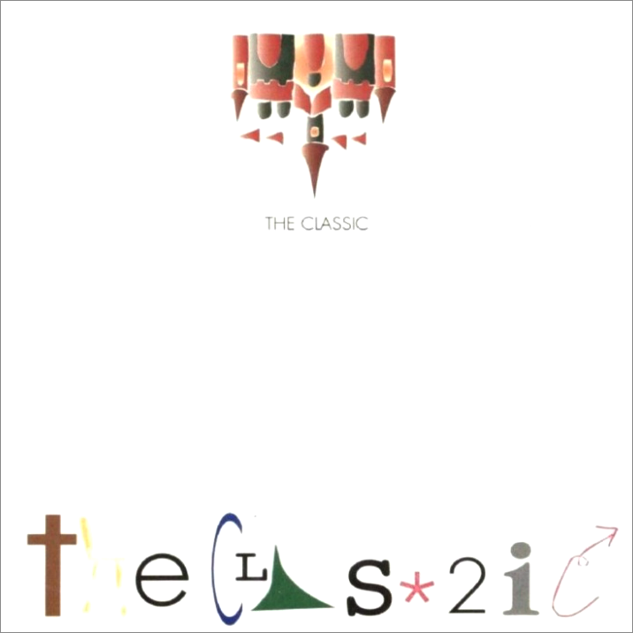

안녕하세요 라보엠입니다.
요즘 블로그 포스팅 때문에 옛날 노래를 많이 듣고 있는데, 추억에 빠져 마음이 몽글몽글해지는 기분입니다. 물론 요즘도 좋은 노래들이 많지만, 옛날 노래들에는 설명하기 힘든 뭔가가 있습니다. 오늘은 그 옛날 김광진, 박용준 듀오 더 클래식의 명곡 마법의 성을 소개해드리겠습니다. 학창시절 테이프를 무한 반복해서 들었던 기억이 새록새록 나네요.
더 클래식 마법의 성
더 클래식 1집 소개
김광진은 이승환 3집 내게 라는 노래를 작곡했으며, 박용준은 이승환의 밴드에서 활동하던중, 이승환의 주도와 지원으로 듀오팀 더 클래식을 결성하고 1집 THE CLASSIC 을 발표합니다. 앨범 발표전부터 작곡과 밴드 세션으로 활동하며 인정받던 두 사람이 이승환의 제작 지원을 받아 만든 1집 앨범은 마법의 성 인기에 100만장을 판매하며 엄청난 성공을 거두게 됩니다. 타이틀곡인 마법의 성은 서정적인 가사와 멜로디로 대중들의 인기를 끌었으며, 앨범 발표전부터 히트를 칠 것을 예감했는지, 김광진 보컬의 원곡 외에 백동우가 부른 아이버젼, 뮤지션 친구들이 함께 부른 버젼 세가지를 모두 한 앨범에 담았습니다. 마법의 성 외에도 흥겨운 리듬의 오비이락, 제리제리 고고, 연주곡 그녀의 모든 아침과 개인적으로 이 앨범에서 가장 좋아하는 노래인 이승환이 부른 엘비나 등 좋은 노래가 많이 담겨있습니다. 여담으로 마법의 성은 도스시절 가장 인기 있었던 게임 페르시아의 왕자2에서 모티브를 얻었다고 김광진이 직접 밝힌바 있습니다 .
마법의 성 가사
믿을 수 있나요 나의 꿈속에서
너는 마법에 빠진 공주란 걸
언제나 너를 향한 몸짓엔
수많은 어려움뿐이지만
그러나 언제나 굳은 다짐뿐이죠
다시 너를 구하고 말 거라고
두 손을 모아 기도했죠
끝없는 용기와 지혤 달라고
마법의 성을 지나 늪을 건너
어둠의 동굴 속 멀리 그대가 보여
이제 나의 손을 잡아 보아요
우리의 몸이 떠오르는 것을 느끼죠
자유롭게 저 하늘을 날아가도 놀라지 말아요
우리 앞에 펼쳐질 세상이
너무나 소중해 함께라면
마법의 성을 지나 늪을 건너
어둠의 동굴 속 멀리 그대가 보여
이제 나의 손을 잡아보아요
우리의 몸이 떠오르는 것을 느끼죠
자유롭게 저 하늘을 날아가도 놀라지 말아요
우리 앞에 펼쳐질 세상이
너무나 소중해 함께 있다면
